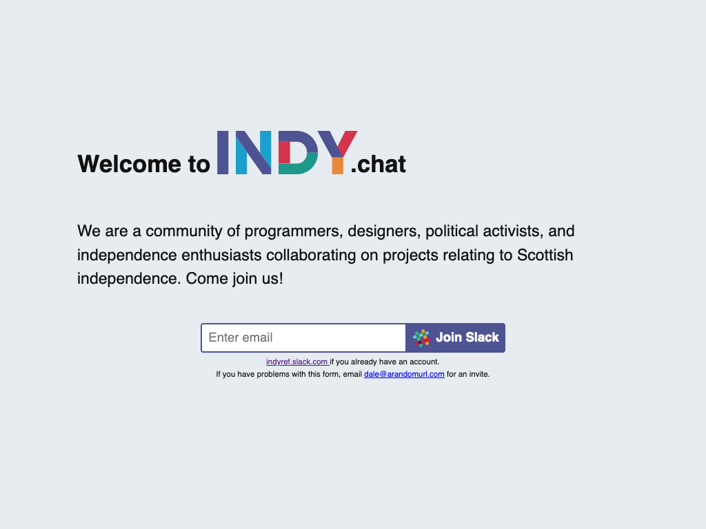
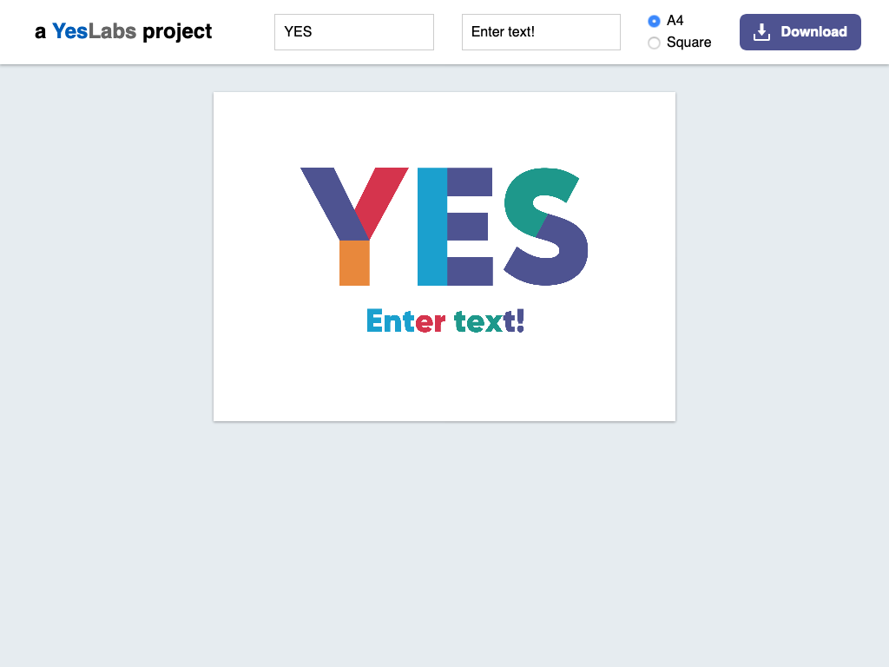
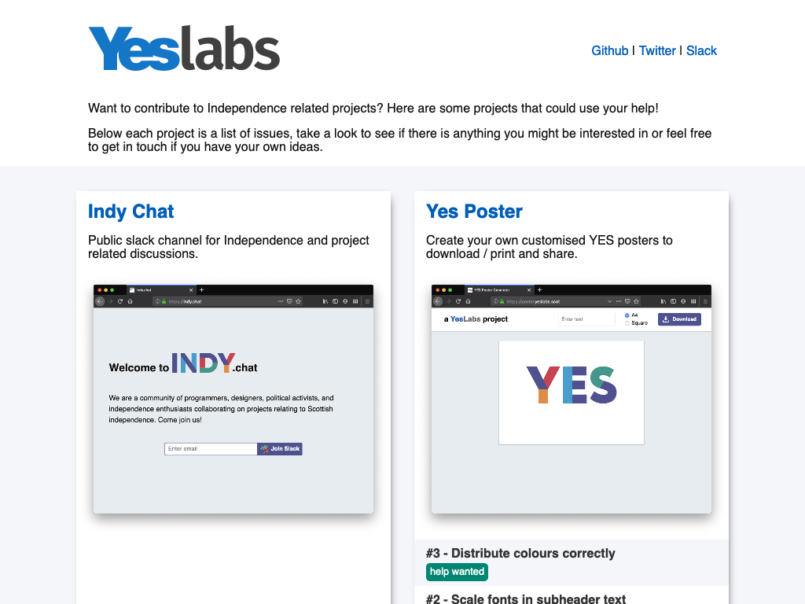
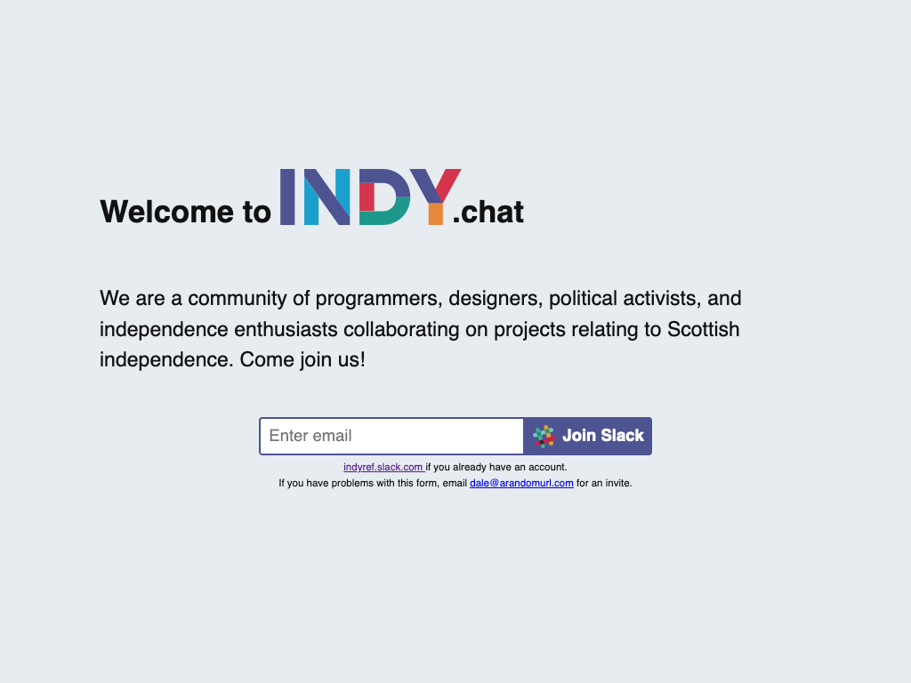
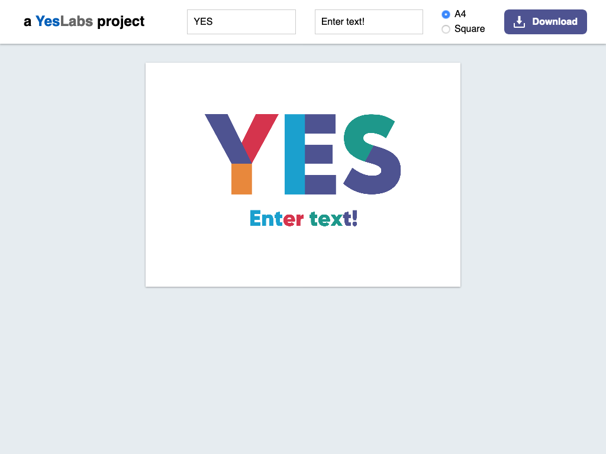
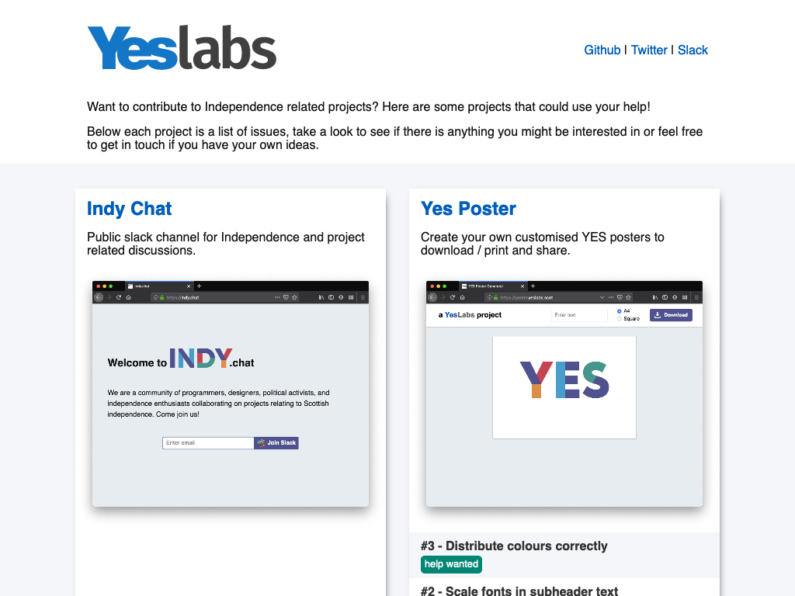

Indy Chat
Public slack channel for Independence and project related discussions.
Yes Poster
Create your own customised YES posters to download / print and share.
Yeslabs.scot
A home for various Independence related websites and projects.

Want to get involved with Independence related projects? Here are some projects that could use your help!
Below each project is a list of issues, take a look to see if there is anything you might be interested in or feel free to get in touch if you have your own ideas.
Public slack channel for Independence and project related discussions.
Create your own customised YES posters to download / print and share.
A home for various Independence related websites and projects.
